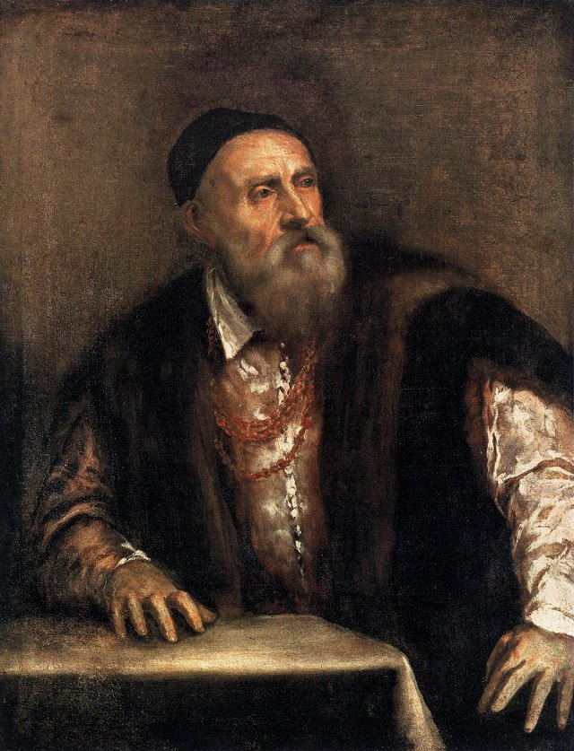

Autoritratto1550 - Gemäldegalerie, Berlino Nel primo Autoritratto, attualmente a Berlino, il pittore si presenta con la berretta nera, il mantello bordato di pelliccia, ma soprattutto con la catena di conte palatino e cavaliere dello Sperone d’Oro donatagli dall’imperatore Carlo V: Tiziano ne sarà sempre orgogliosissimo. Il volto è fiero, lo sguardo ancora vivido ed acuto. L’ambientazione è scarna; gli abiti sono a pennellate grandi, le mani sono appena accennate. Tiziano si rappresenta con una mano appoggiata sul tavolo, oggetto, questo, di norma utilizzato nei ritratti degli umanisti, dei letterati. Non ha un pennello, nè una tavolozza cioè nessun oggetto che lo identifichi come pittore ed il suo sguardo è rivolto a destra. Iconograficamente discorrendo, chi guarda verso destra si rivolge al futuro mentre lo sguardo verso sinistra è quello rivolto al passato. Tiziano, in questo caso, si rappresenta come colui che è ancora in grado di creare e non solo con i colori, ma con la mente e …ne aveva dato dimostrazione nelle “poesie” inviate a Filippo II (una per tutte, Giove e Antiope, Parigi, Musée du Louvre). L’atto creatore e l’idea creatrice di un’opera non era rappresentata solo dalla mano che la eseguiva (ed infatti nell’autoritratto in questione, le sue mani sono poco più che abbozzate), ma dalla mente che lo concepiva. La sua conoscenza della mitologia era così vasta che poteva ancora essere fruttuosa, poteva avere un futuro. Nell’altro Autoritratto, ora a Madrid, l’angolazione è diversa, ha in mano un pennello, indossa ancora la collana dell’onorificenza, ma appare più vecchio e soprattutto guarda verso sinistra. Venezia era cambiata e con essa anche la committenza e Tiziano lo aveva ben compreso. |
| Barbiero Leonardo
Designer & Biografia leonardo.barbiero@gmail.com |
Bottin Marco
Contenuti & Revisione bottin.marco@gmail.com |
Accessibilità
 Validato CSS3
Validato CSS3
|